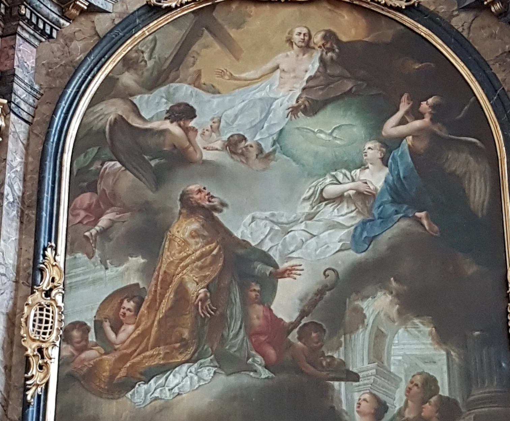
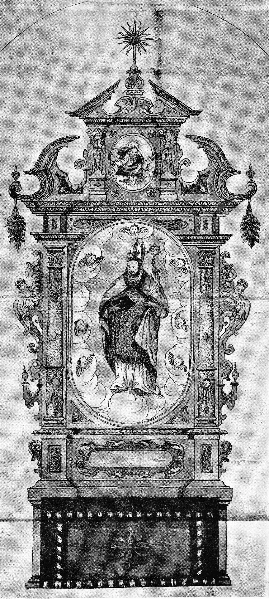
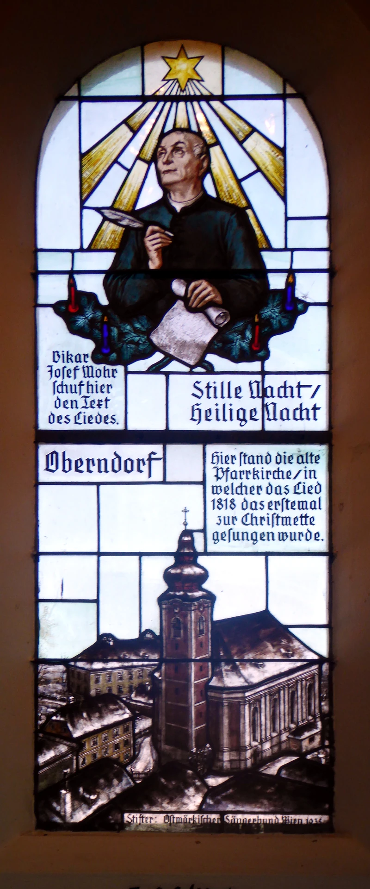
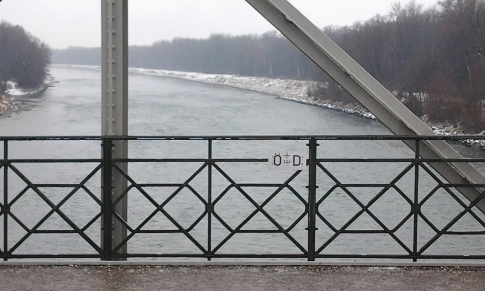
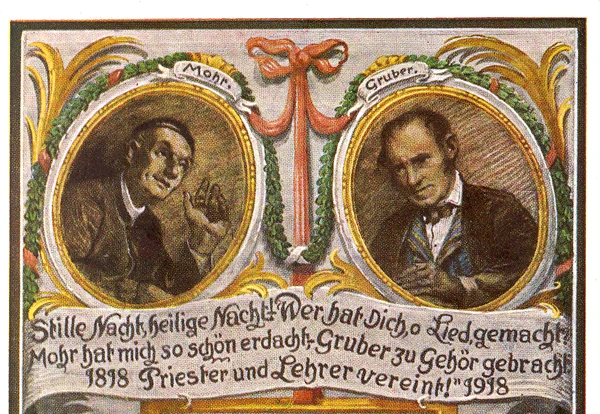
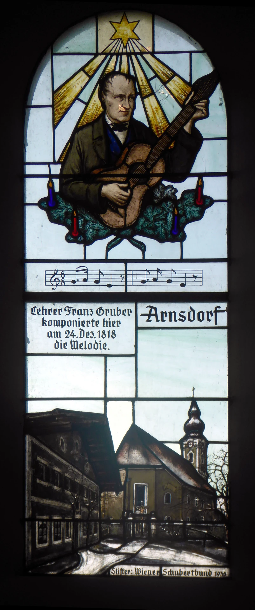

 아직 펼치지 않은 카드
아직 펼치지 않은 카드
「고요한 밤」이 처음 불린 강가의 성당은 지금 없어요. 강물이 여러 번 넘쳐 헐린 그 성당의 돌 더미 위에, 1937년 작은 예배당이 섰어요. 예배당 유리창 속에 남은 옛 성당을 찾아보세요.
‘고요한 밤’을 처음 부른 성당은 강물 때문에 없어졌어. 그 자리에 작은 예배당이 생겼는데, 유리창 안에 옛 성당이 숨어 있대. 같이 찾아볼까?
검수 전 시안이에요(기준서 1판). 성당의 역사는 오베른도르프 본당이 정리한 연표와 고요한 밤 협회 자료를 따랐고, 기록마다 다른 연도는 ‘기록마다 다른 점’에 모았어요. 상상은 ‘눈 감고 상상해 보기’에서만 해요.
오베른도르프(Oberndorf)는 잘차흐강(Salzach)이 크게 굽이도는 자리의 마을이에요. 강가의 성당은 뱃사람을 지켜 주는 성인 니콜라오(독일어로 니콜라)에게 바친 ‘뱃사람들의 성당’이었어요.
이 마을 사제의 이름은 1135~1141년 무렵의 기록에 처음 나와요. 그래서 그 무렵 이미 성당이 있었다고 봐요.

1757년 4월 1일, 큰불이 성당과 성당지기의 집을 태웠어요. 1770년에 새 성당의 주춧돌을 놓았고, 1798년에 축성했어요. 축성은 새 성당을 하나님께 바치는 예식이에요.
1816년 5월 1일, 잘차흐강이 오스트리아와 바이에른(지금의 독일)의 경계가 되었어요. 강 건너 라우펜(Laufen)과 나뉜 오베른도르프에서, 뱃사람들의 성당은 이때 마을의 본당이 되었어요. 본당은 한 지역 신자들의 중심이 되는 성당이에요.
1818년 성탄 밤 이 성당에서 「고요한 밤」을 처음 들은 이들도, 성탄 미사에 온 뱃사람들이었어요.
강에서 배를 타는 사람들이 다니던 성당이었어. 불에 타서 다시 짓기도 했대.
물어보기강에서 일하던 뱃사람들은 이 성당에서 무엇을 빌었을까?
강가의 성당은 물을 자주 맞았어요. 1852년 홍수로 크게 상해, 이듬해 2월부터 그해 성탄 직전까지 문을 닫았어요.
1897년에 또 물이 들었고, 1899년에는 1572년 이후 가장 큰 홍수가 마을과 성당을 덮쳤어요. 1903년 11월 23일, 성당은 너무 낡아 위험하다는 까닭으로 문을 닫았어요.

사람들은 옛 마을 한가운데를 비우고, 강 위쪽으로 600m쯤 떨어진 더 높은 땅에 새 마을을 세웠어요. 1906년 그곳에 새 성당을 지어 그해 11월 25일 축성했고, 그 무렵부터 옛 성당을 헐었어요.
옛 성당의 제단(성당 맨 앞, 미사를 드리는 자리)과 감실, 그림과 조각은 새 성당으로 함께 옮겨 갔어요. 감실은 성체(미사 때 나누는 빵)를 모셔 두는 작은 함으로, 사진 맨 아래 가운데 왕관을 얹은 금빛 문이에요. 사진 속 큰 제단도 옛 성당에서 옮겨 와 새 성당에 맞게 고친 것이에요. 맨 위의 작은 그림만은 1905년에 새로 그렸어요.
강물이 자꾸 넘쳐서 성당이 망가졌대. 마을 사람들은 높은 곳에 새 성당을 짓고, 옛 성당의 제단을 옮겼어.
물어보기집을 옮겨야 한다면, 너는 무엇을 꼭 가져가고 싶어?
옛 성당을 헐고 남은 돌 더미 위에, 1924년 기념 예배당을 짓기로 했어요. 여덟 모 난 작은 예배당은 1936년에야 다 지어졌고, 1937년 8월에 봉헌했어요. 첫째 장면의 축성처럼, 하나님께 바치는 예식이에요. 그날 「고요한 밤」의 곡을 지은 프란츠 그루버의 손자, 펠릭스 그루버(Felix Gruber)도 함께했어요.
예배당 양쪽 벽에는 1935년 티롤(오스트리아 서쪽의 산악 지방)의 유리화 공방이 만든 두 창이 있어요. 한쪽은 노랫말을 쓴 모어의 창, 다른 쪽은 곡을 지은 그루버의 창이에요. 모어의 창 속 작은 것들을 하나씩 눌러 보세요.
모어의 창 속 작은 것들을 하나씩 눌러 보세요. ‘가까이 보기’로 크게 볼 수 있어요.

예배당의 ‘모어의 창’, 1935년 티롤 유리화 공방 · 사진: Renardo la vulpo · CC BY-SA 4.0 · 위키미디어 공용
그림 위의 숫자나 아래 번호를 눌러 보세요.
헐린 성당은 돌 더미가 되었지만, 그 위에 선 작은 예배당이 유리창 속에 그 모습을 지키고 있어요.
맞은편 그루버의 창 맨 아래에는, 그가 교사이자 성당지기, 오르가니스트로 일하던 이웃 마을 아른스도르프의 성당(마리아 임 뫼슬)이 그려져 있어요. 두 사람의 창이 저마다 자기 성당을 품고 마주 보고 있어요.
예배당 유리창에 노랫말을 쓴 신부님이 있어. 맨 아래를 봐! 없어진 옛 성당이 그려져 있어.
물어보기유리창 맨 위에 빛나는 건 뭘까? 손가락으로 짚어 볼래?
1953년부터 한 해도 빠지지 않고, 해마다 성탄 전야 오후 5시에 예배당 앞에서 「고요한 밤」 기념 예식이 열려요. 여러 나라에서 온 사람들이 여러 나라 말로 이 노래를 함께 불러요.
멀리 있는 사람들을 위해 2002년부터는 인터넷 카메라로, 2019년부터는 유튜브로 예식을 중계해요. 한국 시각으로는 12월 25일 새벽 1시예요.
2013년 6월, 잘차흐강이 다시 넘쳐 주민 80명쯤이 몸을 피했어요. 그때도 예배당은 물 피해를 입지 않았어요. 옛 성당의 돌 더미 위, 조금 높은 자리에 서 있기 때문이에요.
성탄 전야 오후 5시, 예배당 앞에 선다면 어느 말로 함께 부를까요?
해마다 성탄 전날 저녁, 여러 나라 사람들이 이 예배당 앞에 모여 자기 나라 말로 ‘고요한 밤’을 불러.
물어보기너는 ‘고요한 밤’을 어느 나라 말로 불러 보고 싶어?
눈 감고 상상해 보기
성탄 전야, 해가 지고 강바람이 차요. 언덕 위 작은 예배당 창에 불빛이 비치고, 앞마당에 모인 사람들이 저마다의 말로 첫 소절을 불러요. 발밑에는 200년 전 그 노래가 처음 울린 성당의 돌들이 잠들어 있어요.
눈을 감아 봐. 깜깜한 겨울 저녁, 언덕 위 작은 예배당 앞이야. 여러 나라 사람들이 한목소리로 ‘고요한 밤’을 불러.
노래가 태어난 성당은 사라졌지만, 노래는 남았어요. 내가 오래 남기고 싶은 것은 무엇인가요?
없어진 성당을 사람들이 유리창에 그려 남겼어. 너라면 무엇을 그려 남기고 싶어?
마음에 닿는 한 줄을 고르거나 직접 써 보세요. 한 줄을 남기면 이 자리의 도장이 찍혀요. 이 기기에만 저장돼요.
이야기를 보다 궁금해질 만한 것들이에요. 답을 읽거나 짧은 영화로 보세요.



아직 펼치지 않은 이야기예요. 누르면 이야기가 펼쳐지고 색이 돌아와요. 더 알고 싶으면 근거를 따라가 보세요.
다 펼치면, 다음에 오실 때 새 이야기가 찾아와요.
오늘의 뒷이야기는 여기까지예요. 다음에 오시면 새 이야기가 기다리고 있어요.
펼친 뒷이야기 · 누르면 다시 볼 수 있어요
옛 성당을 헌 해 본당 연표는 1905년 말~1906년에 헐기 시작해 1907년 무렵 종탑과 벽 일부만 남았다고 적어요. 고요한 밤 협회는 1909년에 마침내 헐렸다고 적고, 1910년이나 1913년이라고 쓴 안내도 있어요.
예배당을 지은 해 1924년에 짓기로 하고 기초를 놓았다는 기록(고요한 밤 협회·독일어 위키백과)과, 1930~1936년에 지었다는 안내(잘츠부르크주 관광청)가 있어요.
봉헌한 날 오베른도르프의 고요한 밤 안내는 1937년 8월 15일, 고요한 밤 협회 연표는 8월 16일이라고 적어요.
창에 적힌 말 창에는 모어가 ‘이곳에서’ 노랫말을 지었다고 적혀 있지만, 시는 1816년 마리아파르에서 썼어요. 창은 성탄 밤 미사 ‘때’ 불렸다고 적었지만, 미사가 끝난 ‘뒤’ 불렀다는 기록도 있어요.

확인한 날 · 2026년 11월 18일 · 바뀌기 쉬운 정보라 정기적으로 다시 확인해요
잘츠부르크 중앙역에서 지역 열차(로컬반)를 타면 25분쯤 걸려요. 강 건너 독일 라우펜에서 다리를 걸어 건너올 수도 있어요.
예배당은 1년 내내 날마다 8시 30분부터 18시까지 열어요. 곁에 고요한 밤 박물관이 있어요. 여는 때와 값은 다녀가기 전에 누리집에서 확인해 주세요.
대림절에는 12월 8~24일에 예배당 곁 브루크만 집(Bruckmannhaus)에 특별 우체국이 열려, 이곳에서 성탄 편지를 부칠 수 있어요. 성탄 전야 기념 예식은 12월 24일 오후 5시예요.
모어의 창에서 일곱 곳을 모두 찾아 읽으면 카드에 금박이 입혀져요.
해마다 이 예배당 앞에서는 여러 나라 말로 「고요한 밤」을 불러요. 둘 가운데 하나만 해도 카드가 채색돼요.
‘처음 만나는 기독교 문화’의 깊은 카드예요. 실제 인물의 사진은 쓰지 않았어요. 카드 단계와 남긴 글은 이 기기에만 저장돼요.
영화처럼 보기 · 약 3분
화면을 누르거나 → 키를 누르면 넘어가요. 그냥 두어도 자막이 저절로 넘어가요.